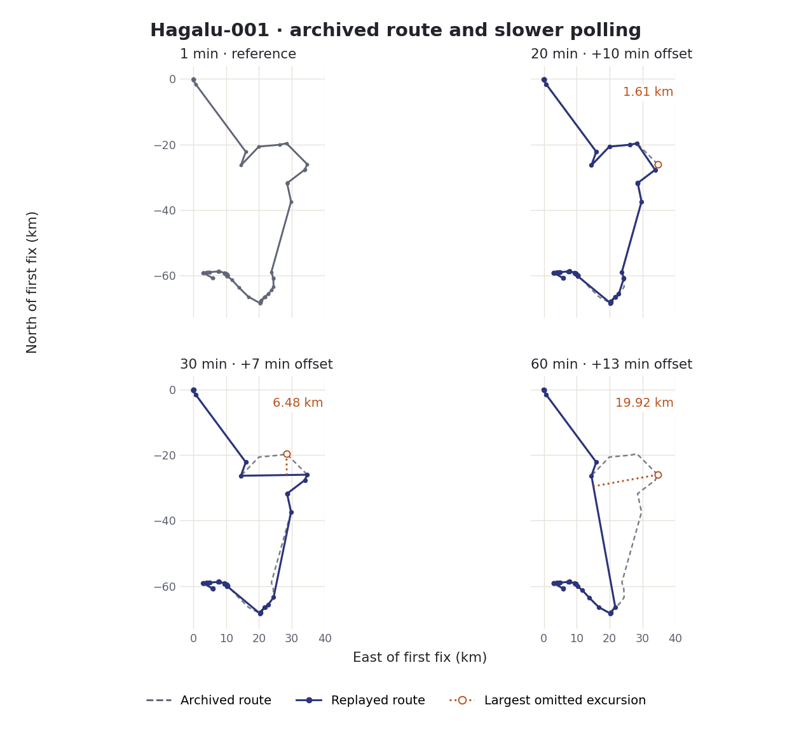

Decision
Set Gantumoote’s default to 20 minutes for OpenHaystack. That schedules 72 batch fetches a day, 95% fewer than a one-minute schedule. The replay stayed within a 2 km route tolerance at every 20-minute start offset under both tested report rankings. This tolerance suits the aim of preserving kilometre-scale route changes in migration studies.
Moving from 20 to 30 minutes saves 24 scheduled fetches a day. It also introduces route shortcuts of up to 7.67 km, depending on start time and report ranking. An hourly schedule can cut across about 20 km. For a study that needs a 1 km tolerance, five minutes was the longest tested interval that passed at every offset under both rankings.
Data and replay
The reference is a read-only export of Hagalu-001’s stored OpenHaystack sightings in Gantumoote on a Raspberry Pi. The date window was midnight to midnight on 21 November 2026 CET. The archive had 108 distinct sightings, from 09:54:40 to 16:14:50 CET. The first successful fetch trailed the sighting by a median 7.15 minutes, with a maximum of 164.14 minutes.
- Treat a report as available from the minute the Pi first saved it. Replay each cadence at every whole-minute start offset from midnight. For example, 20-minute polling has 20 offsets, from +0 through +19 minutes.
- At each poll, consider available reports with sighting timestamps within the preceding seven days. Keep up to eight, then combine the simulated batches and deduplicate by archived sighting. The replay includes earlier sightings as candidates and continues past midnight so late reports can be captured.
- Rank the candidates by first-fetch time, then repeat with sighting time. An earlier live batch returned exactly eight distinct reports for each of the three tags that reported and zero for the other 18. A separate fetch returned eight reports from a tag with 22 already archived for the requested seven-day window. Eight is an empirical model for this collector, and Apple’s ranking is unknown.
- For each omitted sighting, measure the shortest distance to the straight segment between the chronologically bracketing retained sightings. Beyond a replay’s endpoints, measure to the nearest retained endpoint. Retained fixes contribute zero deviation. The maximum over all 108 sightings captures the largest skipped turn or excursion.
Results across start offsets
| Poll interval | Fetches per day | Sightings kept | Maximum deviation, median (range) | Worst deviation when ranked by sighting time |
|---|---|---|---|---|
| 1 minute | 1,440 | 108 | 0 | 0 |
| 2 minutes | 720 | 108 | 0 | 40 m |
| 5 minutes | 288 | 107–108 | 24 m (0–24 m) | 512 m |
| 10 minutes | 144 | 94–104 | 89 m (71–512 m) | 1.61 km |
| 20 minutes | 72 | 73–83 | 1.47 km (1.06–1.61 km) | 1.90 km |
| 30 minutes | 48 | 60–71 | 2.41 km (1.61–6.48 km) | 7.67 km |
| 60 minutes | 24 | 46–52 | 13.19 km (3.85–19.92 km) | 19.92 km |
Counts and deviation ranges use the first-fetch ranking. Fetch counts are scheduled batches per day. Retries and manual fetches can increase the actual request count.


At 30 minutes, the +7-minute offset kept 71 sightings, the maximum at that cadence. It still cut 6.48 km across a bend around 11:12 CET. Under each ranking, 11 of the 30 possible offsets exceeded a 5 km deviation.
Download the results for each offset (CSV). All 256 replay runs include the rank rule, interval, offset, retention and distance metrics. The file contains summary metrics only.
Limits and account risk
The one-minute archive is the reference for this replay. It already had a 74.5-minute gap and several observed legs faster than the 35 km/h flight ceiling assumed for the migration study. The geometric distance measures how much route shape is lost against the archive. It cannot resolve the true path through an observation gap or establish where the tag was at each moment. This was one tag on one day.
Frequent fetches can lead Apple to throttle requests or suspend account access. The replay measures the trade-off between route fidelity and request volume. Apple’s public documentation gives no verified safe interval for this collector. An interrupted Apple session blocks new reports until sign-in is restored. The backed-up tag private key and the locally archived sightings remain usable. Apple Find My security documentation · iCloud terms